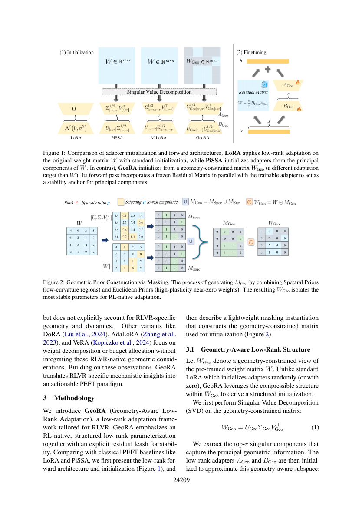
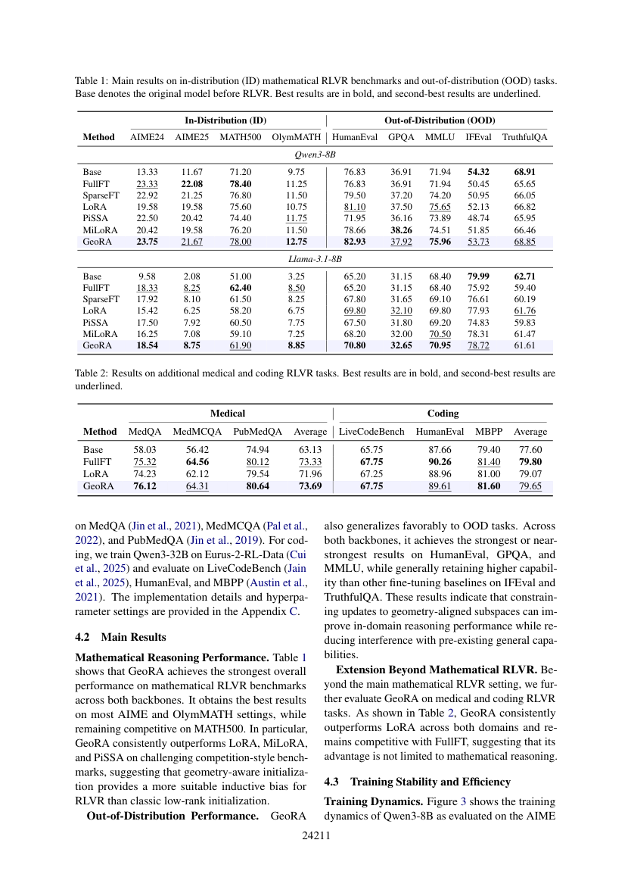
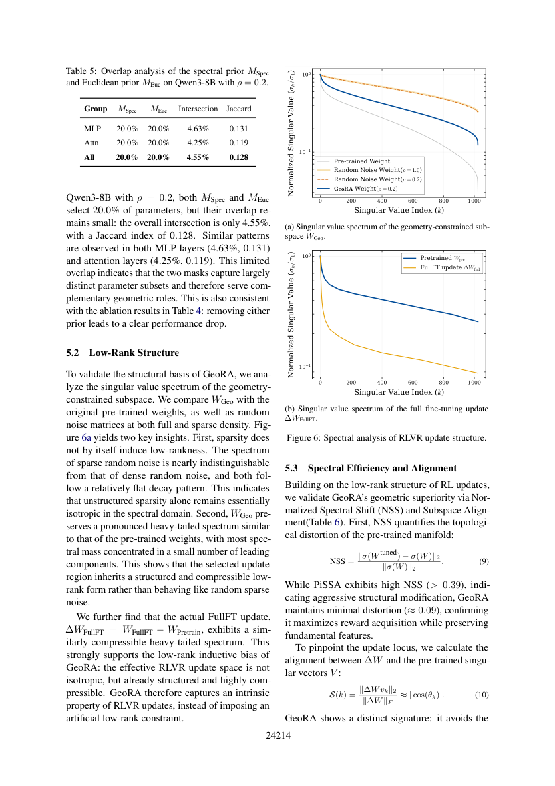
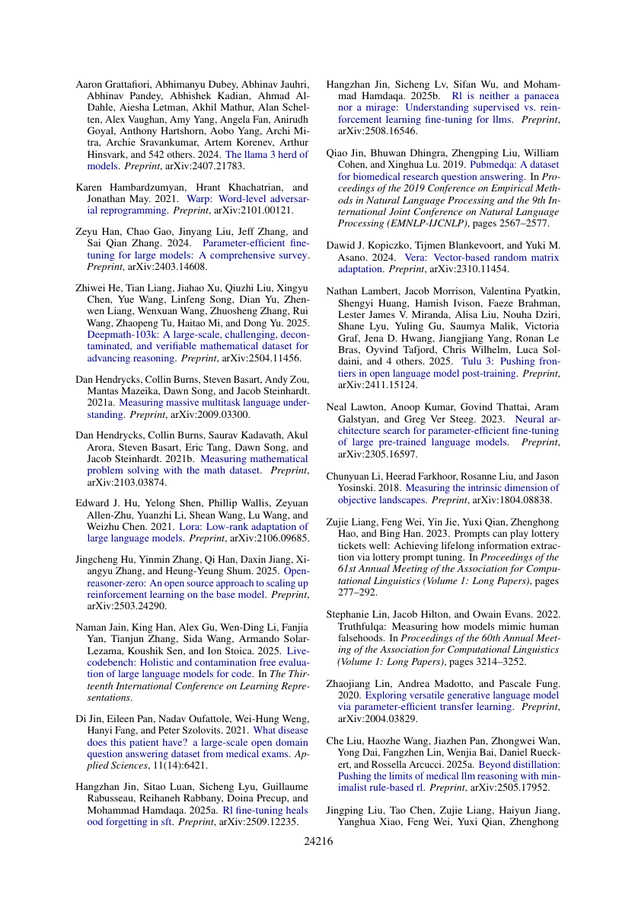

GeoRA：让 RLVR 的低秩适配沿着正确的几何方向更新
Geometry-Aware Low-Rank Adaptation for RLVR 的核心判断是：RLVR 不是把 SFT 的更新方式换成 GRPO 就结束了。奖励驱动的更新会主动离开预训练权重的主方向，因此适配器应当进入“可塑但不破坏结构”的子空间。
一、先说结论：GeoRA 改的不是 rank，而是“更新应该落在哪里”
普通 LoRA 只规定更新矩阵是低秩的；PiSSA 把适配器初始化到权重的主奇异方向，适合保留主要表示能力的 SFT 场景。GeoRA 的观察相反：RLVR 的有效更新往往集中在预训练矩阵的尾部方向，并且更新具有明显的各向异性。
因此它做三件事：用谱先验和欧氏先验筛出几何上更适合改变的权重；在这个受限视图上做 SVD；把未训练的残差冻结为结构锚点。这样既能保持稠密矩阵计算，又避免把 RL 的探索压力施加到最重要的主方向上。

二、算法拆开看：mask → SVD → residual anchor
1. 两个互补的几何先验
谱先验关注预训练矩阵的主子空间，欧氏先验关注权重大小。令 W 为原始权重、Ŵr 为它的 rank-r 近似、ρ 为选择比例：
直觉上，欧氏先验找“幅值小、相对可塑”的位置；谱先验找“不属于主结构”的位置。二者并集避免只用单一标准。论文在 ρ=0.2 时报告两者交集约 4.55%，Jaccard 约 0.128，说明它们提供的是互补信号。
2. 在受限视图中做 SVD 初始化
于是 BgeoAgeo 是对 Wgeo 的 rank-r 重构。注意：SVD 不是直接对整个 W 做，而是对经过几何筛选后的视图做；这正是它与 PiSSA 的关键差别。
3. 冻结残差，初始化时不改变函数
训练时只更新 Ageo、Bgeo，Wres 固定。初始化时两项相加仍等于 W，因此模型不会因为换了适配器而突然改变输出；训练过程中，模型保留一个不可被 RL 噪声直接破坏的预训练结构锚点。
三、一个小例子：为什么不是“取最大的奇异值”
假设某层权重的 SVD 方向中，前两个方向承载通用语言结构，RLVR 的奖励只要求模型学会一种新的解题格式。若把 rank=2 直接放在主方向上，更新会高效但容易改变原有能力；GeoRA 先用 mask 排除或弱化这些结构敏感位置，再在剩余视图中提取 rank=2 的可训练方向。于是低秩预算被用来“改变任务行为”，冻结残差负责“守住基础能力”。这也解释了论文观察到的现象：GeoRA 的 head subspace overlap ≤ 0.02，而 tail overlap ≥ 0.96。

四、实验结果：提升的不只是训练集分数
作者在 Qwen3-8B、Llama-3.1-8B，以及医疗和代码任务上比较 FullFT、SparseFT、LoRA、PiSSA、MiLoRA。Qwen3-8B 使用 DeepMath-103K + GRPO，rank=16、ρ=0.2。
| 方法 | AIME24 | AIME25 | MATH500 | OlymMATH | HumanEval |
|---|---|---|---|---|---|
| LoRA | 19.58 | 19.58 | 75.60 | 10.75 | 81.10 |
| PiSSA | 22.50 | 20.42 | 74.40 | 11.75 | 71.95 |
| MiLoRA | 20.42 | 19.58 | 76.20 | 11.50 | 78.66 |
| GeoRA | 23.75 | 21.67 | 78.00 | 12.75 | 82.93 |
在同一设置下，GeoRA 的 OOD 指标也更稳；医疗任务平均 73.69，代码任务平均 79.65。论文的解释是：冻结残差降低了 RLVR 对预训练拓扑的破坏，所以收益不仅体现在目标数学集，也体现在迁移和遗忘控制上。

五、稳定性与工程含义
在激进学习率 5e−5 下，GeoRA 的 reward 最高、KL 更受控；PiSSA 在训练后期出现明显性能下跌。谱扰动指标 NSS 也支持这个解释：GeoRA 约 0.092–0.096，明显低于 PiSSA 的约 0.395–0.418。

落地建议：如果你要把 GeoRA 接入 RLVR 训练，先固定 ρ 和 rank 做基线，再分别记录 reward、KL、OOD 能力与谱扰动 NSS；不要只看训练集准确率。它的主要收益来自更新位置和残差保护，rank 本身不是全部。
六、边界与我的判断
GeoRA 依赖权重几何与 SVD，mask 和分解会带来预处理成本；ρ、rank 也需要按模型和任务调参。它并非证明所有 RLVR 更新都在尾部，而是提供了一个可验证的归纳偏置：把大部分参数当作结构，把少量几何上更可塑的方向交给奖励优化。
一句话总结：LoRA 解决“少训练一些参数”，GeoRA 进一步解决“哪些参数值得训练、哪些结构必须保护”。